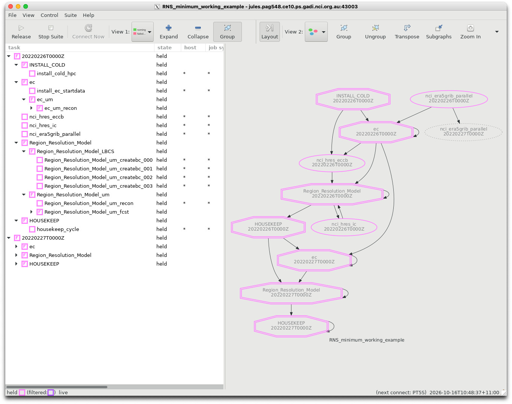
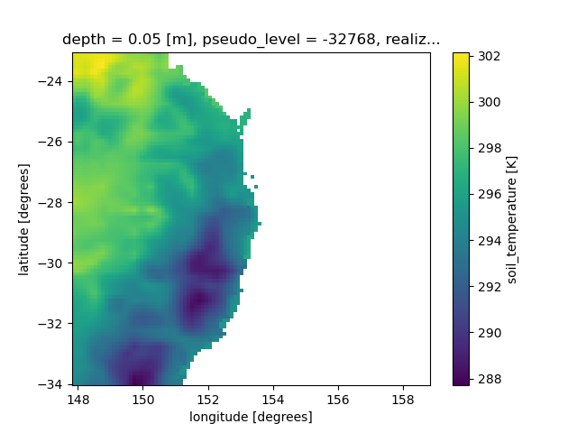
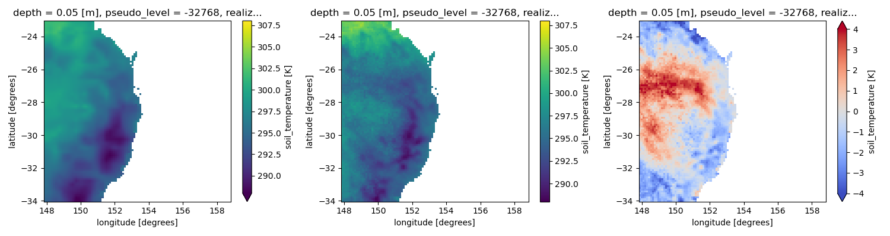
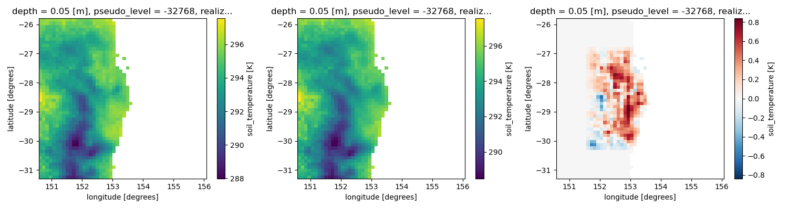
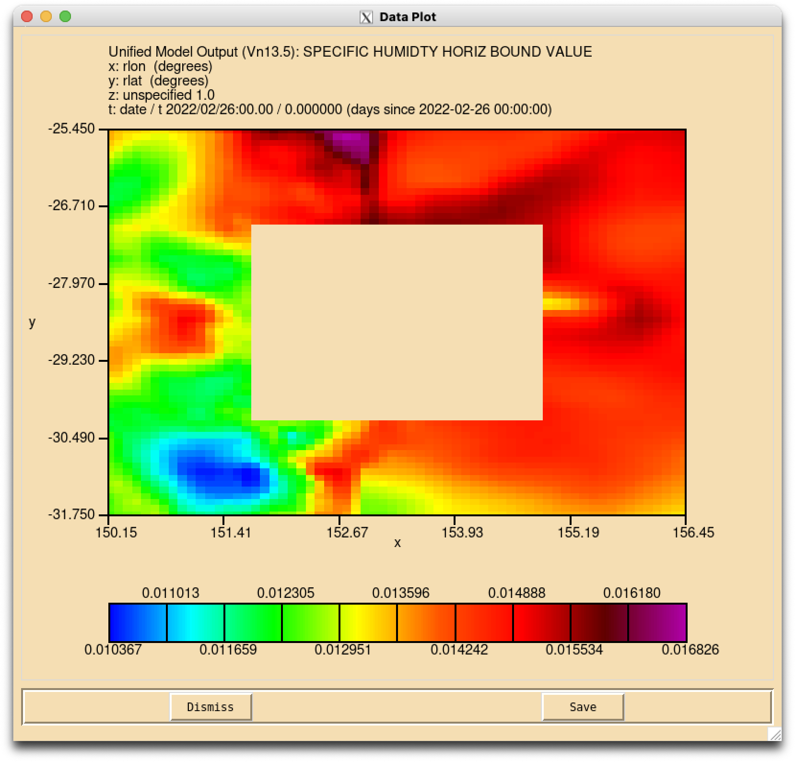
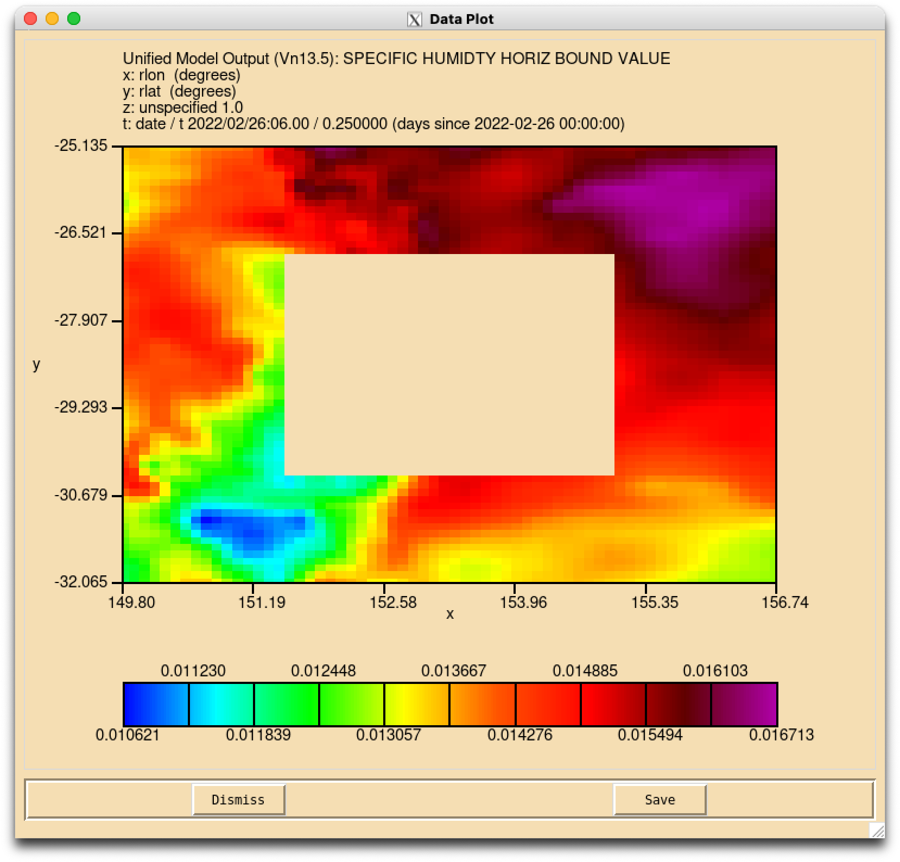
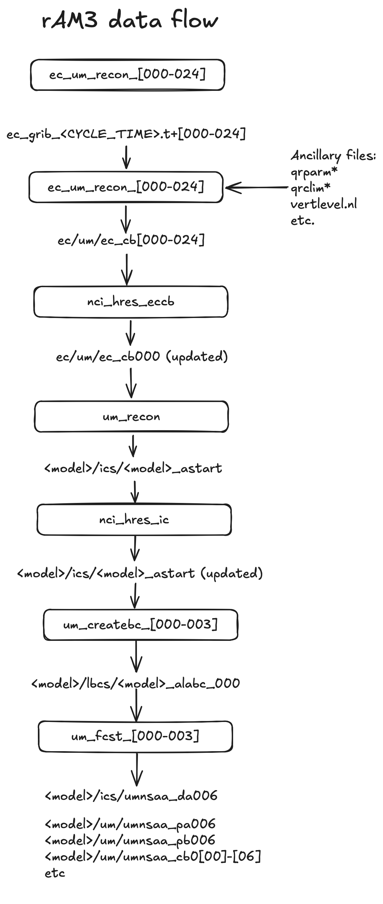

Running the Regional Nesting Suite#
Now we have generated some ancillaries, we can run the UM forecast model!
Let’s checkout a ‘minimum working example’ for the Regional Nesting suite:
$ cd ~/roses/
$ git clone git@github.com:21centuryweather/RNS_minimum_working_example.git
This is a specially-developed suite designed to run with the Regional Ancillary suite we ran before. All extra logic and features related to operational forecasting, UM source code compilation, atmospheric chemistry, UK-specific features etc. have been removed.
Because of this
The suite will not render correctly in the
rose editGUI, butThe
rose-suite.confis simple enough that we can examine it directly.
Note
A Jupyter notebook is contained in the suite directory in
~/roses/RNS_minimum_working_example/noteboos/UM_RNS_data_flows.ipynb
which you can use to visualise all data you are generating.
Important
You must be a member of NCI project ob53 to run this example as it uses the Bureau’s BARRA reanalysis data.
Mapping the ancillary directories to forecast regions#
Important
The following is a very important concept within the UM Regional Modelling suites.
Recall for the RAS we defined
One ancillary region (Lismore-Tiny)
Two resolutions nested in this region
The outer resolution ‘era5’
An inner resolution ‘d1100’
These are labelled in the RAS rose-suite.conf as
rg01_name="Lismore-tiny"
...
rg01_rs01_name="era5"
...
rg01_rs02_name="d1100"
Now if let’s examine the RNS rose-suite.conf. It contains:
dm_nregns=1
dm_name="ec"
..
rg01_name="Lismore-Tiny"
..
rg01_nreslns=1
In the RNS (i.e. the forecasting suite) the ‘driving model’ ancillaries are a separate category from the forecast regions. Remember our ‘driving model’ is used to provide lateral boundary conditions and initial conditions ONLY!.
So the RNS only starts counting resolutions and regions for domains where the UM forecast model is run.
The table below summarises this mapping between the RAS ancillaries and the RNS domain definitions. This mapping applies for a single region.
Ancillary Suite |
Nesting suite |
Domain type |
|---|---|---|
rg01_rs01 |
dm |
Driving model |
rg01_rs02 |
rg01_rs01 |
Forecast model nest 1 |
rg01_rs03 |
rg01_rs02 |
Forecast model nest 2 |
rg01_rs04 |
rg01_rs03 |
Forecast model nest 3 |
… |
… |
… |
rg01_rs0[N] |
rg01_rs0[N-1] |
Forecast model nest N-1 |
For our minimum working example we are only running with N=2 ancillary domains, so we are only running a single forecast domain(N=1)
Important
Keeping track of which ancillary files define your first Forecast model nest will be very important when considering your choice of land-surface dataset set. This will be touched on later.
In the RNS rose-suite.conf file, the following definitions are used to define the location of the ancillary files for the driving model and first forecast model nest:
dm_ec_lam_ancil_dir="/scratch/$PROJECT/$USER/cylc-run/RAS_minimum_working_example/share/data/ancils/Lismore-tiny/era5"
rg01_rs01_ancil_dir="/scratch/$PROJECT/$USER/cylc-run/RAS_minimum_working_example/share/data/ancils/Lismore-tiny/d1100"
These directories should have been created and populated with ancillary data when you ran the RAS suite.
Make sure they still have data in them!
Note
The RNS and RAS assume you are running on your default
gadiproject which is specified in the file~/.config/gadi-login.conf. If the value ofPROJECTin this file has changed, you might have to manually alter the definition of the above ancillary directory files.NCI routinely clean the contents of your
/scratch/$USERdirectory every 100 days. So your ancillaries may get deleted if you haven’t touched that directory recently.
Running the suite - task by task#
Let’s step through each task of the suite step-by-step and discuss the associated rose/cylc logic of each task. When we load the suite and hold with the command
$ rose suite-run -- --hold
you will see the following.

Let’s compare the graphical task flow on the right of that image to the task flow specified in the suite.rc file.
graph = """
install_cold_hpc
install_cold_hpc[^] => install_ec_startdata
install_cold_hpc => nci_hres_eccb
nci_era5grib_parallel => ec_um_recon_000
So the first tasks to start (i.e. those that have no prior dependencies) are install_cold_hpc and nci_era5grib_parallel.
install_cold_hpc#
From the suite.rc we can see install_cold_hpc installs various links to existing data at NCI. How does it do this? When you trigger this task, you’ll see the job script contains the logic
cylc__job__inst__script() {
# SCRIPT:
rose task-run -v --opt-conf-key='(nci-gadi)'
}
Recall from the rose tutorials that the use of optional configuration keys automatically points to application files located in app/<task>/opt/rose-app-<key>.conf. If you look at the contents of app/install_cold_hpc/opt/rose-app-nci-gadi.conf you’ll see a long list of UM configuration files on gadi that are now linked to your cylc-run directory. For example, the file app/install_cold_hpc/opt/rose-app-nci-gadi.conf contains:
[file:$ROSE_DATA/etc/um_spectral_ga6]
mode=symlink
source=${UMDIR}/vn${UM_VN}/ctldata/spectral/ga3_0
[file:$ROSE_DATA/etc/um_spectral_ga7]
mode=symlink
source=${UMDIR}/vn${UM_VN}/ctldata/spectral/ga7
If you look in ~/cylc-run/share/data/etc/ you’ll see the corresponding links now exist.
lrwxrwxrwx 1 pag548 ce10 66 Oct 16 10:54 um_spectral_ga6 -> /g/data/access/projects/access/umdir/vn13.5/ctldata/spectral/ga3_0
lrwxrwxrwx 1 pag548 ce10 64 Oct 16 10:54 um_spectral_ga7 -> /g/data/access/projects/access/umdir/vn13.5/ctldata/spectral/ga7
nci_era5_grib_parallel#
This task sets up the initial conditions for your run. It will retrieve grids of the ERA5 global analysis which is created by the European Centre for Medium Range Weather Forecasting (ECMWF), valid at the dates you specify. The task login in suite.rc
[[nci_era5grib_parallel]]
inherit=None, HOST_HPC
pre-script = mkdir -p $OUTDIR
[[[ environment ]]]
OUTDIR={{dm_ec_ic_lbc_dir}}
tells us it will store them in directory specified as dm_ec_ic_lbc_dir in our rose-suite.conf file. Here, dm_ec_ic_lbc_dir is shorthand for driving model European Centre initial conditions lateral bounday cconditions directory. The default setting from rose-suite.conf is
dm_ec_ic_lbc_dir="/scratch/$PROJECT/$USER/EC_GRIB_PARALLEL"
If you examine this directory you’ll find the following files:
ec_grib_202202260000.t+000
ec_grib_202202260100.t+000
ec_grib_202202260200.t+000
ec_grib_202202260300.t+000
ec_grib_202202260400.t+000
ec_grib_202202260500.t+000
ec_grib_202202260600.t+000
If you use the suite’s notebook mentioned above, you’ll notice each file contains 19 variables. The grib files have gobal extent defined on a 0.25 degree grid.
ec_um_recon#
The next set of tasks fall within the ec task family. First we run install_ec_startdata which is creates a directory to store regional model’s initial conditions. From suite.rc
{# Driving model task family #}
[[ec]]
[[install_ec_startdata]]
inherit = ec, ARCHIVE
pre-script = mkdir -p $ROSE_DATAC/ec/ics/
Next we run ec_um_recon, which spawns one reconfiguration task for every hour for the first day of our simulation.
The reconfiguration task uses an Fortran executable that is build from the UM source code. The reconfigure task itself is a UM task and we can follow the logic chain in suite.rc
[[ec_um]]
# Settings for all DM recon and forecast tasks.
... (skip) ...
[[[environment]]]
DRV_MOD=ec
CRUN_LEN = {{CRUN_LEN}}
ROSE_APP_OPT_CONF_KEYS = $DUST_OPT $EC_OPT
ROSE_TASK_APP = glm_um
Note the use of a jinja loop to define 24 seperate ec_um_XXX tasks. First, the jinja logic is defined near the top of the suite.rc file (lines 38-40)
{# For EC driving model set up n_lbcs so that can set up correct number of driving model
recon jobs. Our EC data is stored in hourly files. We add '+1' so the jinja loop will run from 00 to 24 #}
{% set n_lbcs = 24 + 1 %}
Which allows to specify 24 seperate ec_um_XXX that will each produce an initial condition valid for a specific hour.
[[ec_um_recon]]
inherit = ec_um
{% for lb in range(n_lbcs) %}
{% set lbc = lb|pad(3,"0") %}
{% set lbin = ( lb * dm_ec_cb_freq / 3600 ) |int %}
{% set lbint = lbin|pad(3,"0") %}
[[ec_um_recon_{{lbc}}]]
# Settings for any DM reconfiguration task.
inherit = ec_um_recon
...(skip)...
script = {{TASK_RUN_COMMAND}} --path="share/spack_build/*/bin" --command-key=recon
...(skip)...
{% endfor %}
The contents of app/glm_um/rose-app.conf show
meta=um-atmos/vn13.5
[command]
default=um-atmos
recon=um-recon
So we using the UM to not actually run an atmospheric forecast, but to
Regrid the original ERA5 data onto our regional domain, and
Integrate all the ancillary information we defined previously in the Regional Ancillary Suite into our domain.
The initial conditions are now availabe in your directory ~/cylc-run/RNS_minimum_working_example/share/cycle/20220226T0000Z/ec/um/
$ ls ~/cylc-run/RNS_minimum_working_example/share/cycle/20220226T0000Z/ec/um/
ec_cb000
ec_cb001
ec_cb002
ec_cb003
...
If you run the notebook now, it will cp ec_cb000 to ec_cb000_init so this original file is stored. That’s because subsequent tasks will over-write ec_cb000 with improved land-surface data.
Note these files contain 116 variables! A large increase from the 19 from the original ERA5 data. The data now includes all the additional atmospheric and land-surface data from our ancillaries. Here is a plot of the initial soil temperature taken from the ERA5 data and re-gridded to our regional test domain.

nci_hres_eccb#
The next task in our suite will provide higher-resolution land/surface data. Note the task flow definitions from suite.rc
ec_um_recon_000 => nci_hres_eccb => Region_Resolution_Model_um_recon => nci_hres_ic =>
The value of NCI_HRES_ECCB in rose-suite.conf will determine the choice of land/surface data. In this example,
NCI_HRES_ECCB="barra"
Which means we will be using the Bureau’s BARRA Australian re-analysis to provide land/surface data at 0.11 degree increments. If you wish to use BARRA you must have membership of the NCI project ob53.
Note
The other options available for NCI_HRES_ECCB are ‘none’ (use original ERA5 data) or ‘era5land’ which takes land/surface data from the ERA5-Land reanalysis defined at 0.1 degrees resolution.
Important
The type of land/surface dataset determines the outer resolution of your regional model. Here is a summary of the restrictions on the Ancillary suite rg01_rs01 definition, which correponds to dm in the Nesting suite.
Data Source |
NCI_HRES_ECCB |
Required resolution |
|---|---|---|
default (ERA5) |
none |
No restriction. |
ERA5-land |
era5land |
0.1 degrees |
BARRA |
barra |
0.11 degrees |
For ERA5-land, the grid point locations of your outer domain defined as rg01_rs01 MUST be defined at 0.1 degree intervals, e.g. 39.4, 39.5, 39.5 etc.
For of BARRA, the grid point locations of your outer domain defined as rg01_rs01 MUST MATCH EXCATLY the grid point locations of the BARRA grid. Hence, you are best examining BARRA data first to find out exactly what these points are. In our example, sample longitude points are 152.06, 152.17, 152.28 etc.
See here for further confirmation.
After running the nci_hres_eccb task for our example, the file ec_cb000 is updated with higher resolution land/surface data. Only the first hour reconfiguration file is changed, as this forms the initial condition for our first day of simulation. The remaining reconfiguration files (hours 01-24) are used to defined the lateral boundary conditions.
If you are following along with the notebook, it will copy ec_cb000 to ec_cb000_hres so this original file is stored. This allows us to see the impact of using a higher resolution land/surface data on the soil temperature of our initial condition. This figure is replicated below.

Region_Resolution_Model_um_recon#
All our processing now has involved setting up the initial conditions on the 100x100 ‘Driving Model’ grid. Now we need to run the reconfiguration task to create the initial conditions on the first (and in our case, only) 50x50 forecast model nest. The task Region_Resolution_Model_um_recon will regrid the ERA5 data onto our nest mesh, and apply all the ancillary data. The output is a file called GAL9_astart, where GAL9 refers to Global Atmosphere Version 9, i.e. the atmospheric science package used by the UM for lower-resolution, global runs.
Note the task logic from the suite.rc file
ec_um_recon_000 => nci_hres_eccb => Region_Resolution_Model_um_recon
If you are following along with the notebook, it will copy GAL9_astart to GAL9_astart_init so this original file is stored. This file contais 167 variables!
nci_hres_ic#
This task replicates nci_hres_eccb but applies it to our forecast grid, i.e. it will update the land/surface data of forecast net initial condition file with better resolution data.
Note the task logic from the suite.rc file
ec_um_recon_000 => nci_hres_eccb => Region_Resolution_Model_um_recon => nci_hres_ic
If you are following along with the notebook, it will copy the updated GAL9_astart to GAL9_astart_hres so we can compare the differences in the two ASTART files. The figure below is taken from the notebook.

Region_Resolution_Model_LBCS#
Now we move to generate the Lateral Boundary Conditions for our forecast nest. These define the temporal evolution of the flow gradients along the nest boundaries. Because of the temporal nature of the LBCs, we need multiple tasks to span the 24 hour period. So within the Region_Resolution_Model_LBCS task family, we will have multiple Region_Resolution_Model_um_createbc_XXX tasks. Again, this is done inside suite.rc using jinja templates.
First we have a jinja macro at lines 35-36 of suite.rc which takes the variables CYLC_INT_HR and CRUN_LEN from rose-suite.conf to determine how many tasks we need.
The values set in rose-suite.conf are
CRUN_LEN=6
CYCLE_INT_HR=24
Which means we are going to run a 6 hourly forecast run and begin a new forecast cycle every 24 hours. Hence, we need four separate forecast tasks for each daily cycle. Therefore, we need four LBC tasks. The jinja macro computes n_cruns using
{# Set the number of UM tasks/day #}
{% set n_cruns = ( CYCLE_INT_HR/ CRUN_LEN) | int %}
And then we have a loop which creates multiple um_createbc and um_fcst tasks.
{% for cr in range(0,n_cruns) %}
{% set crp = cr|pad(3,"0") %}
nci_hres_eccb => Region_Resolution_Model_um_createbc_{{crp}} => Region_Resolution_Model_um_fcst_{{crp}}
{% endfor %}
Important
You must delete the extra ec_cb000_* files we created earlier to assess the impacts of the high resolution soil moisture on these reconfigured files. Otherwise, the executable um-createbc.exe will create extra duplicates of LBC information for the first six hours and the UM will fail.
So make sure you execute
$ rm ~/cylc-run/RNS_minimum_working_example/share/cycle/20220226T0000Z/ec/um/ec_cb000_*
before triggering the task Region_Resolution_Model_um_createbc_000.
If you are following along with notebook, it contains logic to do this.
The LBC files will be generated in
~/cylc-run/RNS_minimum_working_example/share/cycle/20220226T0000Z/Lismore-Tiny/test/GAL9/lbcs/GAL9_alabc_000.
Unfortunately these files cannot be easily loaded with any python tool (that I know of) but you can view them using the xconv tool which you can use from a gadi terminal using
$ module use ~access/modules
$ module load xconv
$ xconv GAL9_alabc_000
If you load one of the forecast fields from that file and plot it in xconv it will resemble this.

Note the large spatial extents of the LBCs, necessary to resolve the flow gradients moving into and out of our nest. The LBC file contains different outputs for every hour, e.g. loading the value of specific humidity valid at 2022/02/26 06:00Z will produce the following plot.

Now the LBCs are generated, we can finally run a forecast!
Region_Resolution_Model_um_fcst#
As we saw above, the suite.rc file uses a jinja loop to create as many UM forecast tasks required to span our forecast cycle.
In this case, we will require four um_fcst tasks spanning six hours to cover our daily forecast cycle.
After your first forecast task completes (Region_Resolution_Model_um_fcst_000) you will have the following files in your forecast output directory:
$ cd ~/cylc-run/RNS_minimum_working_example/share/cycle/20220226T0000Z/Lismore-Tiny/test/GAL9/um
$ ls
umnsaa_cb000 umnsaa_cb002 umnsaa_cb004 umnsaa_cb006 umnsaa_pb000 umnsaa_pverb000 umnsaa_pverd000 umnsa.xhist
umnsaa_cb001 umnsaa_cb003 umnsaa_cb005 umnsaa_pa000 umnsaa_pvera000 umnsaa_pverc000 umnsa.stash
You will also have a new file in your initial conditions directory.
~/cylc-run/RNS_minimum_working_example/share/cycle/20220226T0000Z/Lismore-Tiny/test/GAL9/ics/umnsaa_da006
which is the initial condition for the next forecast cycle, valid from 06Z.
These are raw UM binary files. These can be loaded using the python iris module which can be used to create xarray objects.
This logic is taken from the accompanying notebook.
UM_NSAA_PB_FILE = GAL9_DIR / 'um/umnsaa_pb000'
UM_NSAA_PB = iris.load(UM_NSAA_PB_FILE)
mslp = xr.DataArray.from_iris(UM_NSAA_PB[0])
Note in the rAM3 Regional Nesting Suite, an additional task will convert all of these raw UM files into netCDF files for you.
Congratulations#
You’ve now ran through a minimum-working-example of Unified Model Regional Nesting Suite. While the rAM3 model is far more complicated that this (it can support multiple UM model types running in multiple regions with multiple nests simultaneously!) hopefully the knowledge you have acquired will help you understand the steps required to run a regional atmospheric modelling simulation and help understand any obstacles or hurdles that you encounter along the way.
Below is a simple flow chart of the tasks and datafiles required to run the Regional Nesting Suite.
